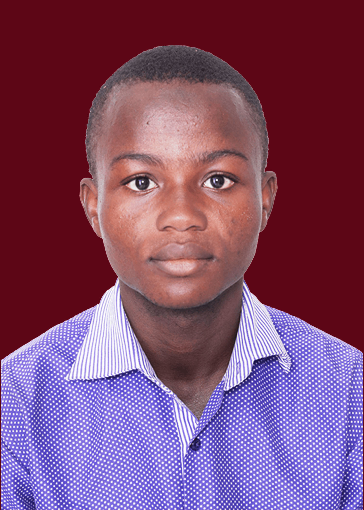

Umar Abdul Manan

Professional Summary
I am a multi-talented graphic designer with about 2 years of experience. I have worked on over 100 designs for individuals, businesses, and organizations. I am adept at visual strategy, layout development, branding, and typography, with a proven ability to transform client ideas into beautiful, functional design solutions.
Education
Vitting Senior High School, Tamale
- Studied General Art (2018 - 2021)
Imtiyaz College of Education
- Diploma in Arabic Studies
September, 2023 to September 2024
Skills
- Adobe Creative Suite (Photoshop, Illustrator, Lightroom, Premiere Pro, After Effects)
- Photography and Photo Editing
- Videography and Video Editing
- Motion Graphics
- Branding and Logo Design
- WordPress Development
- HTML, CSS
- Print Design
- Typography
- Microsoft Office
- Time Management
- Computer Software and Windows Installations
Work Experience
Graphic Designer
NiV, Sagnarigu Kukuo at Noorsac Premises
- Designed certificates for the YES Project participants, including myself.
- Created the YES Project Graduation Flyer.
Videographer
Ramadan Tafsir By Dr. Tamim at Old Cemetery, Tamale
- Shot Ramadan Sermon for 25 days during Ramadan 2024 for ED TV.
Photographer
GDG (Google Developer Groups) DevFest at the Aliu Mahama Sports Stadium
- Served as one of the photographers at the 2023 DevFest held at the Aliu Mahama Sports Stadium.
Photographer
NiV, Sagnarigu Kukuo at Noorsac Premises
- Shot and edited pictures for the YES Project confidence-building training at the NiV conference hall.
Teaching
Kukuo Taufikiyya Islamic School kuko, Tamale
- National Service personnel at kukuo Taufikiyya Islamic School
2023 TO DATE
Awards and Certifications
- Certificate in Photography and Videography (NiV YES Project)
- Outstanding Learner/Participant (NiV Yes Project)
- Adobe After Effects (AQSKIL.com)
Other
Hobbies
Contact